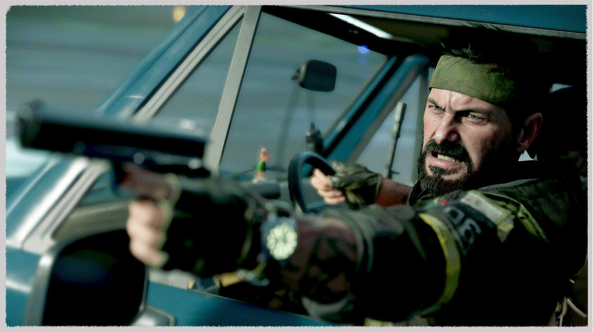
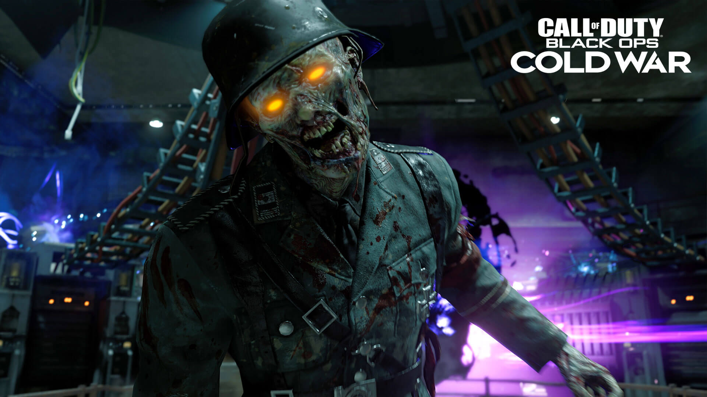

Campagne
Impossible de discerner le vrai du faux dans la Campagne solo haletante conçue par Raven Software. Faites face à des figures historiques et d'atroces vérités lors de combats de part et d'autre du monde dans des lieux emblématiques comme Berlin-Est, le Vietnam, la Turquie, les quartiers généraux du KGB et bien d'autres.

EN SAVOIR PLUS
Multijoueur
Prenez part à des opérations contestables et à des combats hors du commun dans la prochaine génération de Multijoueur. La Révélation du Multijoueur est prévue pour le 9 septembre, alors n'oubliez pas de vérifier les derniers renseignements.
 EN SAVOIR PLUS
EN SAVOIR PLUS
Zombie
Black Ops Cold War embarquera les vétérans ainsi que les nouveaux venus dans une aventure aussi terrifiante qu'audacieuse qui développe une partie emblématique de la franchise Call of Duty. Ce mode en coop inclut de nouveaux moyens de progresser, des atouts emblématiques et tout un arsenal d'armes de la Guerre froide pour aider les survivants à dominer les légions de morts-vivants.

EN SAVOIR PLUS